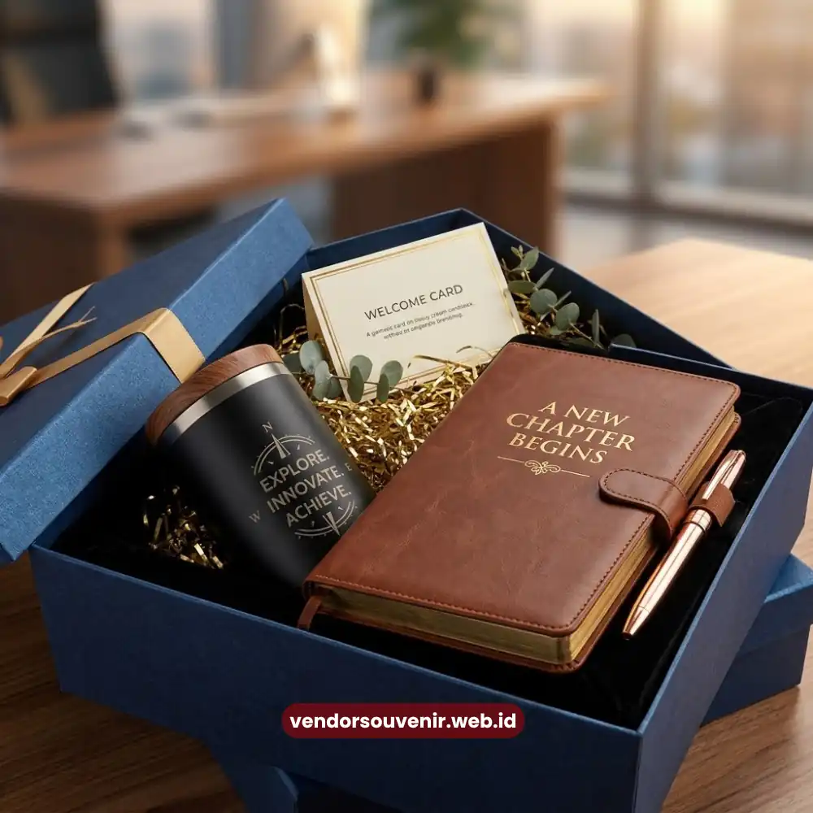

Daftar Isi
Isi souvenir onboarding kit yang ideal terdiri dari kombinasi barang fungsional harian.
Item seperti tumbler, notebook, tote bag, dan lanyard biasanya dicetak dengan logo perusahaan.
Hal ini dilakukan agar kit terasa personal sekaligus tetap mempertahankan kesan profesional.
Kombinasi ini dipilih karena manfaatnya langsung terasa oleh karyawan baru sejak hari pertama bekerja.
Sehingga adaptasi karyawan dengan budaya perusahaan dapat berjalan lebih lancar dan berkesan.
- Isi kit yang ideal berkisar tiga hingga lima item agar tidak terkesan berlebihan.
- Barang fungsional lebih diprioritaskan dibanding barang yang hanya bersifat pajangan.
- Tumbler dan notebook custom menjadi dua item paling sering dipilih perusahaan.
- Penyesuaian isi kit dengan budaya kerja perusahaan meningkatkan kesan personal.
Apa Saja Item Wajib dalam Souvenir Onboarding Kit Karyawan Baru?
Item wajib dalam souvenir onboarding kit umumnya mencakup alat tulis kerja dan wadah minum.
Serta tas pendukung mobilitas dan atribut identitas seperti lanyard atau id card holder.
Keempat kategori ini dianggap paling mendasar karena menunjang aktivitas kerja harian karyawan baru.
Notebook atau agenda kerja menjadi item yang hampir selalu ada di setiap paket.
Karyawan baru biasanya membutuhkan media pencatatan selama masa orientasi dan pelatihan awal.
Selain fungsinya yang praktis, sampul notebook menjadi ruang branding yang sangat luas.
Untuk menampilkan logo dan warna khas perusahaan secara mencolok namun elegan.
Tumbler atau botol minum custom logo juga menjadi favorit karena penggunaannya yang tinggi.
Barang ini cenderung dibawa karyawan ke berbagai tempat, termasuk ruang meeting dan area publik.
Sehingga secara tidak langsung memperluas visibilitas brand perusahaan di berbagai lokasi strategis.
Tote bag atau tas kanvas biasanya ditambahkan sebagai wadah utama untuk membawa seluruh isi kit.
Sekaligus berfungsi sebagai tas kerja tambahan setelah proses onboarding karyawan tersebut selesai.
Sementara itu, lanyard dan id card holder menjadi pelengkap yang wajib dan sangat penting.
Karena berkaitan langsung dengan identitas karyawan di seluruh area lingkungan kantor.
Bagaimana Menyusun Isi Kit agar Berkesan Namun Tetap Fungsional?
Menyusun isi kit yang berkesan sekaligus fungsional dapat dilakukan dengan menetapkan prioritas.
Prioritaskan barang yang benar-benar digunakan setiap hari dalam rutinitas kerja sehari-hari.
Dibanding memilih barang yang hanya menarik secara visual namun jarang dipakai kembali oleh karyawan.
Prinsip ini penting agar souvenir tidak berakhir di laci meja tanpa fungsi lanjutan.
Salah satu pendekatan yang banyak digunakan adalah menyusun kit berdasarkan tiga kategori khusus.
Yaitu kebutuhan kerja harian, identitas perusahaan, dan tentunya sentuhan personal bagi karyawan.
Kebutuhan kerja harian diwakili oleh alat tulis dan tumbler fungsional kualitas terbaik.
Identitas perusahaan diwakili oleh desain logo yang dicetak konsisten pada setiap item.
Sedangkan sentuhan personal bisa berupa kartu ucapan selamat bergabung yang ditulis khusus.
Terutama yang ditujukan langsung untuk menyambut dan mengapresiasi karyawan baru tersebut.
Selain kombinasi barang, urutan penyajian saat penyerahan kit juga sangat memengaruhi kesan.
Kesan yang diterima karyawan akan jauh lebih baik jika kit dikemas secara rapi.
Kit dalam satu kotak atau tote bag dengan susunan tertata memberikan kesan lebih profesional.
Dibanding barang yang diserahkan terpisah-pisah tanpa menggunakan kemasan pelindung khusus.
Riset umum di bidang employee experience menunjukkan bahwa detail kecil seperti kerapian kemasan berdampak besar.
Hal ini seringkali memengaruhi persepsi karyawan terhadap keseriusan perusahaan.
Terutama dalam mengelola sumber daya manusianya pada periode awal masa kerja karyawan.
Apa Perbedaan Isi Kit untuk Perusahaan Formal dan Perusahaan Kasual?
Perbedaan utama isi kit untuk perusahaan formal dan kasual terletak pada jenis item dan gaya desain.
Meski secara umum struktur dasar kit di berbagai industri seringkali tetap serupa.
Penyesuaian ini penting agar souvenir terasa lebih relevan dengan budaya kerja masing-masing perusahaan.
Pada perusahaan dengan budaya kerja formal, seperti institusi keuangan atau firma hukum bergengsi.
Isi kit cenderung memilih item dengan desain minimalis dan menggunakan warna-warna netral.
Misalnya notebook kulit sintetis, pulpen logam, serta tumbler stainless dengan finishing matte.
Kesan yang ingin dibangun adalah tingkat profesionalisme dan kredibilitas perusahaan di mata tim.
Sebaliknya, pada perusahaan dengan budaya kerja lebih kasual seperti startup teknologi atau agensi kreatif.
Isi kit sering menampilkan warna yang lebih berani dan elemen desain playful.
Serta tambahan item seperti stiker logo, kaos oversized, ataupun enamel pin yang trendi.
Pendekatan ini bertujuan menonjolkan identitas brand yang lebih ekspresif dan dekat dengan anak muda.
Meski gaya desain berbeda, prinsip dasar dalam menyusun kit ini pada dasarnya tetap sama.
Yaitu memastikan setiap item dapat digunakan dalam aktivitas kerja sehari-hari di kantor.
Agar souvenir yang diberikan tidak sekadar menjadi barang pajangan sesaat saja bagi karyawan.

Tote Bag dan Lanyard sebagai Pelengkap Onboarding Kit
Item Tambahan yang Bisa Memperkuat Kesan Kit Onboarding
Selain empat item wajib, beberapa item tambahan dapat memperkuat kesan personal dan profesional.
Terutama untuk menaikkan nilai dari keseluruhan paket souvenir onboarding kit yang telah disiapkan.
Penambahan ini sifatnya opsional namun terbukti cukup efektif meningkatkan nilai estetika kemasan.
Sticky notes custom logo dapat ditambahkan sebagai pelengkap alat tulis dengan biaya sangat terjangkau.
Mug custom juga menjadi alternatif menarik bagi perusahaan yang ingin memberikan sedikit variasi.
Sebagai substitusi tumbler, hal ini cocok untuk lingkungan kerja yang lebih santai dan interaktif.
Payung lipat berlogo perusahaan turut menjadi pilihan yang cukup diminati oleh banyak HRD saat ini.
Mengingat fungsinya yang sangat praktis digunakan di berbagai kondisi cuaca di Indonesia.
Apalagi item ini bisa dipakai saat karyawan beraktivitas di luar jam kerja reguler.
Penambahan kartu ucapan selamat bergabung yang berisi pesan singkat dari pimpinan atau tim HRD.
Hal tersebut juga terbukti memberikan sentuhan personal yang sangat kuat pada benak karyawan.
Meski biayanya minim dibanding item fisik lainnya, efek emosional yang ditimbulkan sangatlah signifikan.
Kesalahan yang Perlu Dihindari Saat Menentukan Isi Kit
Kesalahan yang perlu dihindari saat menentukan isi kit adalah memasukkan terlalu banyak item.
Apalagi tanpa mempertimbangkan fungsi harian, serta mengabaikan konsistensi desain logo.
Kedua hal ini dapat mengurangi kesan profesional yang seharusnya dibangun melalui souvenir onboarding kit.
Menambahkan terlalu banyak item justru dapat membuat kit terasa berlebihan dan kurang terarah.
Alih-alih terlihat lengkap, paket justru bisa membuat meja karyawan tampak penuh dan berantakan.
Idealnya, tiga hingga lima item sudah sangat cukup untuk memberikan kesan menyeluruh.
Tanpa membebani anggaran berlebih maupun memakan banyak ruang penyimpanan bagi karyawan.
Selain itu, perbedaan warna atau ukuran logo pada setiap item dapat menimbulkan kesan kurang rapi.
Desain yang tidak terstruktur pada berbagai bahan barang sering membuat identitas perusahaan kabur.
Sehingga penting untuk menyamakan pedoman desain sejak awal proses produksi berjalan dengan vendor.

Vendor Souvenir Siap Membantu Anda Menyusun Kit Ideal
Maroon Souvenir
Partner Corporate Gift terpercaya di Indonesia. Berpengalaman melayani ratusan perusahaan sejak 2018.
Lihat Portofolio Kami